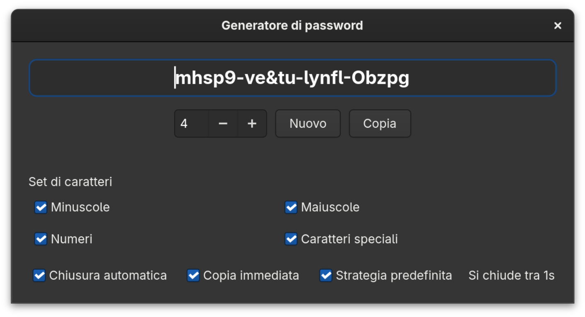
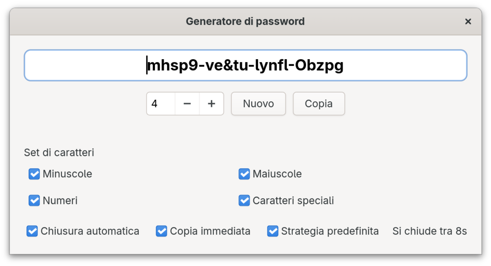

Software libero · GNOME · completamente offline
Password robusta. Solo tua.
Generatore di password è un’app GTK4 nativa per GNOME. Crea password crittograficamente robuste direttamente sul tuo computer, in gruppi di cinque caratteri e a un clic dagli appunti. Niente rete. Niente cloud. Niente telemetria.
hT4k#-qW9m!-Lp2xZ
Robustezza
Valore esatto, valutazione e tempo stimato per un attacco a forza bruta, con l’ipotesi dichiarata apertamente (10¹² tentativi/s, hash veloce), non come slogan.
01 Vantaggi
La tua password resta sul tuo computer.
Tutto funziona in locale, in un’app GTK4 distribuita come Flatpak. Non c’è nessun server che possa salvare, perdere o condividere qualcosa, e non devi configurare nulla per questo.


100% offline
Nessun accesso alla rete, né nel Flatpak né nel codice. Niente account, niente cloud, niente telemetria: semplicemente non c’è nulla che possa andare perso, essere rubato o venduto.
Casualità crittografica
Ogni carattere proviene dal generatore di numeri casuali del sistema operativo (OsRng), la stessa fonte da cui il software di cifratura ricava le proprie chiavi.
Gruppi di cinque
abcde-FGHIJ-12345 è più facile da leggere, dettare e digitare di un groviglio di caratteri, e la lunghezza si vede a colpo d’occhio.
Robustezza onesta
Entropia esatta, valutazione e tempo d’attacco stimato. L’ipotesi alla base (10¹² tentativi/s, hash veloce) è indicata, e la strategia predefinita non viene mai presentata più robusta di quanto sia.
Un clic e fatto
La password finisce subito negli appunti, se vuoi già all’avvio, con una conferma visibile. Poi la finestra si chiude da sola: la password sparisce dallo schermo, ma si può ancora incollare.
Adatto a ogni policy
Minuscole, maiuscole, cifre e caratteri speciali si possono disattivare singolarmente. La strategia predefinita garantisce almeno una maiuscola, una cifra e un carattere speciale.
Otto lingue
Italiano, francese, giapponese, inglese, spagnolo, svedese, tedesco e ucraino: l’interfaccia segue la lingua del sistema.
Si integra nel sistema
Chiara o scura in base alle impostazioni di sistema. Invio genera una nuova password, Ctrl+W chiude la finestra, Ctrl+Q esce dall’app: il mouse non serve.
02 Sicurezza
Generata in locale, salvata da nessuna parte.
Il generatore è volutamente piccolo: GTK4 per l’interfaccia, rand per la casualità, alcune librerie Wayland per gli appunti. Niente account, niente connessioni esterne, niente servizi in background. Le proprietà principali:
a.Nessuna rete
Il Flatpak non richiede --share=network e il codice non contiene alcun accesso alla rete. Anche volendo, il generatore non potrebbe inviare nulla.
b.Nessun log, nessuna cronologia
Le password non compaiono mai nella console né nel journal di sistema e non vengono mai scritte su disco. Vengono salvate solo le tue impostazioni.
c.Poco tempo sullo schermo
Con «Chiusura automatica» l’app si chiude dopo 10 secondi; un clic nella finestra ferma il conto alla rovescia. La password resta negli appunti finché non copi qualcos’altro: se usi una cronologia degli appunti, cancellala da lì.
d.Verificabile
Open source con licenza CC BY-SA 4.0: generazione, calcolo dell’entropia e stima della robustezza si possono verificare nel codice e sono coperti da test.
Contact: https://github.com/danst0/passwordgenerator/security/advisories/new Expires: 2027-10-17T00:00:00.000Z Policy: https://github.com/danst0/passwordgenerator/blob/main/SECURITY.md Preferred-Languages: en, de Canonical: https://passwort.dumke.me/.well-known/security.txt
Hai trovato una vulnerabilità? Segnalala in privato tramite GitHub, non come issue pubblica. Di solito confermo la ricezione entro 72 ore; i dettagli vengono pubblicati dopo la correzione.
03 Installa
Un comando, ed è installata.
Flathub
Il metodo consigliato su qualsiasi distribuzione Linux: attualmente sul runtime GNOME 50 e aggiornato automaticamente a ogni nuova versione.
Dal codice sorgente
Con Rust e le librerie di sviluppo GTK4, per chi vuole compilarla o modificarla da sé.
Codice sorgente su GitHub